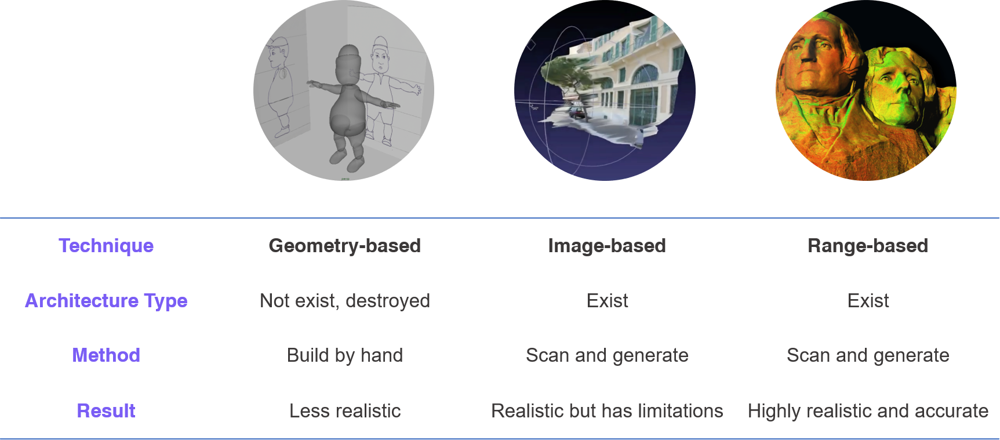
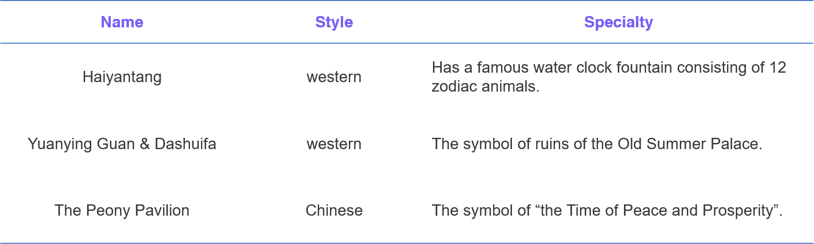
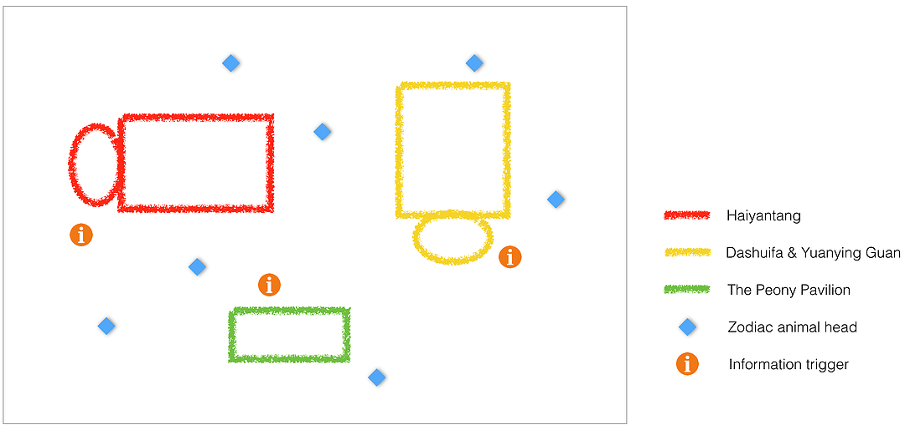
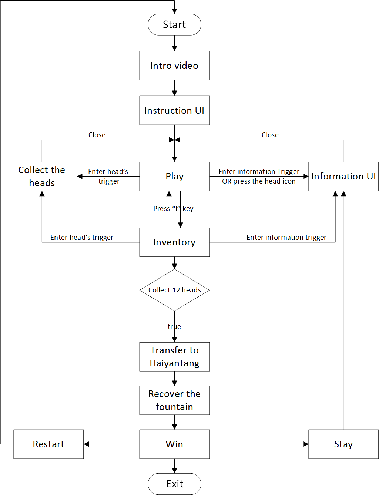

Game Design | 3D Application
The Old Summer Palace
A 3D Cultural heritage preservation and educational game
The Problem
- As natural disasters, wars and human aggression accelerate the rate of destruction of world heritage sites, finding new ways to protect cultural heritage is of great urgency. This project, taking the Old Summer Palace, a complex of palaces and gardens located in Beijing China, as a case study, attempts to develop an informative way of preserving lost heritage sites, using existing 3D technology.
The Solution
- Provide a 3D virtual environment with well-arranged historical records(3D reconstructions, videos, pictures, texts), engaging gamifications and visual effects to let users explore and learn the history.
My Role
- Game Designer
- Unity Developer
- UI/UX Designer
- Individual Master's degree project
Tools
- Unity3D
- 3Ds Max
- Maya
- Photoshop
- AE
- Pr
Time
- 2017
Video Demo

Research
Current Situation and Problems
Archaeologists and governments have been spending a long time working on historical heritage sites protection. However, the sites are still deteriorated at an increasing rate.The main problems in the protection of cultural heritage are:
- Lack of protection consciousness.
- Over-exploitation of the historical heritage for tourism to ensure economic growth.
- Urban sprawl. Skyscrapers take over cultural heritage sites.
- Reparation techniques limitation. Destruction of heritage sites and artifacts while repairing, refurbishing and displaying them.
- Using traditional documentation methods: texts, photographs, etc. These methods do not have higher levels of accessibility. Additionally, they can easily be destroyed by fire, flood or some other unpredictable disasters. Finally, they are hard to duplicate and disseminate.
Motivations for 3D Reconstruction of Heritage Sites
When considering the existing problems stated above, introducing 3D technology to historical heritage protection could be an optimal solution. Compared to the traditional media, the new media technology has better interactivity and intuitivity. The motivations for 3D reconstruction of heritage sites can be classified into three categories:
- Backup copy of the heritage:
- Documenting historic buildings and objects for reconstruction or restoration in case of natural disasters, destruction by human aggression or simply due to the passage of time.
- Reconstructing historic monuments that no longer or only partially exist.
- Education and inheritance:
- Creating educational resources for history, archaeology, humanities, classical and museum studies students and researchers, as well as enthusiasts.
- Providing virtual tourism and virtual museum exhibits.
- Accessibility:
- Visualizing scenes from viewpoints impossible in the real world due to size or accessibility issues.
- Interacting with objects without risk of damage.
3D Construction Techniques
By comparing the restrictions and potential of these 3D construction techniques, the models of this project were suitable to use geometry-based modeling technique, as they are reconstructions of lost cultural heritage sites. To increase the accuracy of the models, referring to more detailed images, photographs and measurement data is required.
Education Value
Based on John Dewey's experiential learning theory, virtual environments can provide users with “designed experiences” and allow them to learn through doing. They are powerful educational tools, as they enhance users’ learning outcomes by providing them with opportunities to practice new knowledge and reflect on those experiences. Educational games that have the characteristics of well-ordered problem-solving, meaningful goals, possibility spaces, feedback, empowerment and reward, make the learning experiential, well-structured, immersive and rich. This project attempted to achieve these characteristics to create an effective cultural heritage preservation and education tool.
Existing Works
CyArk
- 3D online library of the world's cultural heritage site
- Technique: Laser scanning
- Some interaction with the models
- Limited historical data
- URL: www.cyark.org
The Roman Forum
- Digital reconstruction of the Roman Forum
- Technique: Geometry-based modeling
- Limited interaction with the models
- A lot of historical data
- URL: dlib.etc.ucla.edu/projects/Forum/
By reviewing the above two 3D heritage preservation tools, their common point is that they preserve the heritage sites by digitally documenting them, not by creating an informative and integrative application that incorporates gamification which is more engaging for users to play and learn certain historical content.
Design
Based on the research findings in previous section, this project aims to provide people with not only the visualized mesh data of the sites, but also well-arranged related information in forms of multimedia combining the elements of gamification.
Content Design
Before I started to design, I did sufficient history research to decide the content I should include in my project. I chose 3 most typical architectures that can well represent the theme of the whole garden:
In order to make the game educational, the gameplay should contain meaningful tasks and narrative that relevant to the subject matter. Given the story that Chinese government tried to repatriate the lost 12 Zodiac Heads of the Haiyantang water clock fountain, the game would simulate the process by asking the player to collect the 12 Zodiac Heads by completing some informative tasks. The game also displays a visual effect as a feedback to enhance the UX when the player successfully recovers the fountain. After I have worked out the direction, I started to create the game map and define the game objects.
Game Design
The game flow design helps clarify the logic of the game and inform the direction of each step in the functionality development. The following are the menu flow and the game flow chart.
Menu flow chart
Game flow chart
UI and Interaction Design
UI and interaction design has always been a key to a user-friendly application. According to the game flow design, the UI is mainly divided into three parts: initial UI, information panel, and my inventory panel.
Initial UI
- The dialog box in the middle specify the player's task before he starts the game.
- The Zodiac head icon indicates the number of the head the player has collected.
- The 'Hints' button will provide the player hints anytime when he get puzzled. This would prevent the player from giving up the game when he stuck.
Information panel for architectures
When the player enters the information trigger of each architectural construction, the architectural information panel fades in. The information for each architectural construction is divided into two categories: images and video. The player is first provided with two options, namely “Gallery” and “Video”. In the "Gallery", the player is given pictures of the architecture in different time period along with descriptions. The "Video" provides a 1-minute overview of the architecture. This UI design enables users to switch to either option by simply clicking the back button on the top left corner, and close the panel at any time.
Information panel for the Zodiac heads
When the user clicks the animal head icon on the top left corner of the screen, the information panel of the 12 zodiac animal heads shows up. The related description will display dynamically on the right side when clicking the animal heads buttons and the overview button inside the panel.
My Inventory panel
- “My Inventory” panel can be opened and closed anytime by pressing the “I” key on the keyboard. This panel shows the heads that have been collected in real-time, tells the number of the heads remaining to be collected to complete the task in the status texts area, and let the player know what heads are lack.
- The “Go to Haiyantang” and “Recover” buttons won’t be active until the player finishes collecting all the animal heads. When the “Go to Haiyantang” button is clicked, the player is transferred to the front view of the Haiyantang. Then the player can click the “Recover” button to win the game.
Implementation
Development flow chart
The project uses a variety of digital design tools. The choice of the tools for the project was based on my personal expertise as well as the tool’s capability. As was discussed earlier, the reconstruction technology that is suitable for a destroyed cultural heritage site is geometry-based modeling. Hence, Autodesk Maya and 3Ds Max were a natural choice for modeling the 3D assets. Adobe Photoshop was used to create textures for the 3D models as well as other image assets such as UI components. Adobe Premiere was used to do the video editing for the video assets. The Unity3D game engine was used to bring multiple assets into a scene and create a functional virtual environment. All the functions of the project were done in the Unity3D. C# is the programming language used in the project. Finally, to make the project accessible so that a user does not need the development tool to run the application, a build was made that allows one to execute and play the game on any PC.
User Testing
After the project was fully developed, a user testing was designed and conducted to test it, focusing on the following questions:
- Does the application developed increase user’s effectiveness in learning certain historical content compared to a traditional education tool?
- Do participants find the application useful?
- Do participants consider the application compelling?
- Do participants perceive the application as easy to use?
The survey was conducted among 40 UF students. In the survey, two kinds of educational tools were tested and used separately by two groups of students. One is the 3D tool that was developed and the other was the traditional tool that only contains texts and images. The information that both tools provide is the same. To do the comparison, 40 students were randomly divided into group A and group B. Group A did the traditional tool test while group B did the 3D tool test. The test steps can be summarized as follows:
- Demographic Survey: Collect the demographic information of the participants such as gender, age, historical content proficiency, experience in 3D application.
- Pre-Test: Participants were asked to do the pre-test questionnaire that contains 8 multiple choice question about historical content. The pre-test result was used to measure a participant’s baseline competency.
- Play-Test: Group A subjects were assigned to use the traditional tool until they finish reading. Group B subjects were assigned to use the 3D tool until they win the game.
- Post-Test: After the participants were finished using the assigned tool, they were asked to complete a post-test questionnaire that contains the same questions as the pre-test. This attempted to measure the participants’ improvement in answering the questions after using the tool.
- Evaluation: Subjects in group B were asked to complete five question to evaluate the 3D tool regarding the usefulness and ease of use.
Effectiveness Analysis
Participants’ pre-test and post-test answers were recorded during the survey. Afterwards, pre-test accuracy rate, post-test accuracy rate and the improvement rate of each participant were calculated.
The improvement rate of traditional tool and 3D tool
The chart shows a comparison of the improvement rate between the traditional tool and 3D tool. The participants in group A improved an accuracy rate of 32.5% after using the traditional tool, while those in group B improved 39.38% after using the 3D tool. These results suggest that the students who used the 3D tool are able to remember the historical content more easily than those who used the traditional tool.
Evaluation Survey Analysis
This project was evaluated by group B subjects regarding its usefulness and ease of use. The data collected from the survey reveals different results based on subjects’ proficiency level of 3D applications. To make a comparison, the subjects were divided into two categories based on their answers to the question of 3D applications experience in the demographic survey. Group 1 represents more proficiency, and group 2 represents less proficiency.
The subjects’ responses on the evaluation survey questions
Conclusion
By comparing the improvement rate of both subjects groups using either the 3D tool or the traditional tool, it is obvious that the project is more effective than a traditional reading. The results of perceived usefulness and ease of use are divided by the users’ proficiency level in 3D applications. It suggested that the perceived benefit is stronger in experienced 3D application users, while on the other hand, the effect on the beginner users is limited.
Future Directions
The project currently only demonstrates a small part of the Old Summer Palace. In the future, it could be expanded to demonstrate the whole site or even other destroyed cultural heritage sites around the world, making a collection of the world’s lost heritage sites. The project could apply VR technology as researchers and visitors would be significantly benefited from virtual interaction with the sites, which are no longer accessible otherwise. The project can also be installed in history museums and made available online to allow people all over the world to get access to the sites without traveling.